Objets de quête
Voici la liste des objets de quête que vous pouvez trouver dans le jeu.

Voici la liste des objets de quête que vous pouvez trouver dans le jeu.
| Image | Nom | Zone | Description |
|---|---|---|---|
| 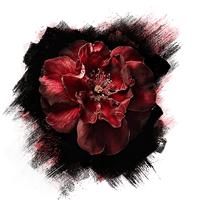 | Fleur pour sophie | Lumière - Prologue | Récupérer la au début de votre aventure sur un banc, afin de la donner à Sophie. |
| 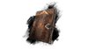 | Journal de Gustave | Lumière - Prologue | Journal donnée par les apprentis de Gustave à remplir au camp, pendant votre expédition. |
| 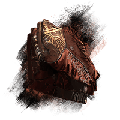 | Lumière - Prologue | Uniforme pour le fils de Richard | A récupérer auprès de Richard à Lumière afin de le donner à son fils. (Débloque une tenue pour Gustave) |
| 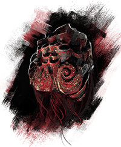 | Peau de Bourgeon | Zones multiples | Obtenu en tuant un bourgeon |
| 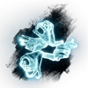 | Couleur de la bête | L'Atelier | Obtenu en parlant au Garçon à L'Atelier |
| 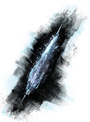 | Glace Eternel | Coeur Ardent | Obtenu en tuant le boss Gargant |
| 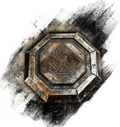 | Jetons de festival | Lumière - Prologue | Il y en à trois a récupérer et utiliser, Le 1er est obtenue après le gommage. Le 2e est donné par Antoine si vous répondez bien à ses questions et le dernier et donné par Maelle si vous la battez sur le port. |
| 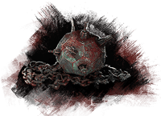 | Mine Intacte | Océan suspendu | Obtenu près de la zone ou le bateau de l'Expédition 68 à été trouvé. |
| 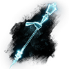 | Lumière de la bête | L'Atelier | Obtenu en parlant au Garçon à L'Atelier |
| 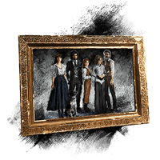 | Tableau de la famille Dessendre | Le Tableau | Obtenue dans la zone "Le Tableau" requiert le Vol d'Esquie |
| 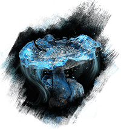 | Champignon | Nid d'Esquie | Obtenue dans le Nid d'Equie à gauche du Mime |
| 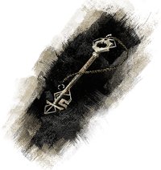 | Vieille Clé | Lumière - Prologue | Obtenue en donnant un jeton de festival à Collette |
| 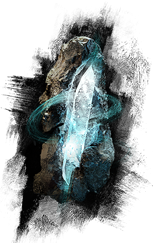 | Cristal de Roche | Falaise de Rochevague | Obtenue dans la zone après l'Hexga Blanc |
| Résine | Vallons Fleuris | A donner a l'Amphorien Blanc | |
| 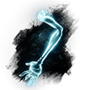 | Ombre de la bête | L'Atelier | Obtenue en parlant au Garçon dans L'Atelier |
| 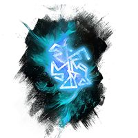 | Picto Etrange | Lumière - Prologue | Obtenue en donnant un jeton de festival à Tom |
| 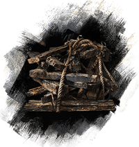 | Planche de bois | Ruine Esotérique | Obtenue après le labyrinth des Ruines Esotérique |
| 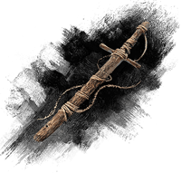 | Bâton de bois | Village Gestral | Obtenue en parlant au Gestral Musclé et lui avoir donné 1000 Chroma |